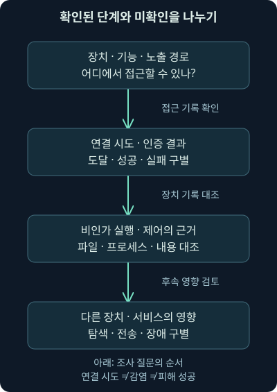
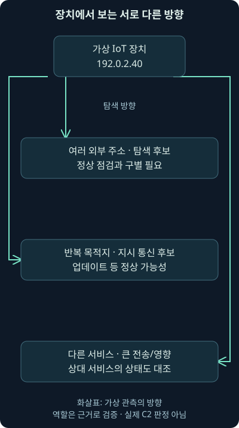
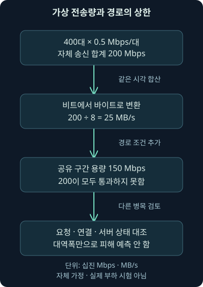

Mirai로 이해하는 IoT 봇넷과 패킷 관측
첫째 날 21강. 작은 장치가 분산된 공격 자원이 되는 원리와 스캔·제어·피해 관측을 구분하고 필터와 합산 계산을 해석합니다.
1. 카메라 한 대가 왜 다른 회사의 문제가 될까요?
가상의 사무실에서 네트워크 카메라가 평소보다 많은 외부 연결을 만들기 시작했습니다. 화면은 잘 나오고 저장도 정상입니다. 그렇다면 보안상 문제도 없을까요? 장치가 원래 기능을 수행하면서 동시에 다른 곳을 스캔하거나 공격 트래픽을 보낼 수 있습니다. 정상 서비스의 작동과 비인가 활동의 부재는 같은 말이 아닙니다.
앞 강의에서는 기회형·표적형이라는 대상 선택 방식과 실제 피해 규모를 분리했습니다. 이번 21강은 Mirai라는 역사적 사례를 통해 작은 장치의 감염, 분산된 자원 사용, 실제 패킷에서의 관측 범위를 연결합니다. 다음 22강은 계정 하나의 접근 문제가 업무 중단으로 이어진 다른 사건입니다. 두 사례를 “작은 공격과 큰 공격”으로 줄 세우지 않고 서로 다른 연결 구조를 읽어 보겠습니다.
사건의 역사적 사실은 표시한 공개 출처를 근거로 합니다. 카메라 주소·계산·관측 시나리오는 모두 직접 만든 가상 예제입니다. 실제 Mirai 프로그램을 실행하거나 외부 장치를 스캔하지 않았으며, 원본 사건의 패킷 파일을 분석한 결과로 설명하지 않습니다.
2. 작은 확성기도 여럿이 모이면 이야기가 달라집니다
조용한 방에서 작은 확성기 한 개가 내는 소리는 제한적입니다. 그런데 여러 확성기가 같은 곳을 향해 동시에 소리를 내면 필요한 안내가 묻힐 수 있지요. 장치 한 대의 능력만 보면 전체 문제를 놓치는 이유입니다.
앞서 배운 봇넷은 통제되는 여러 장치의 집합입니다. 봇은 그 집합에 속해 지시받은 작업을 수행하는 장치를 가리킬 때 쓰는 말입니다. 장치의 소유자는 그런 작업을 승인하지 않았을 수 있습니다. IoT, Internet of Things는 카메라·라우터·센서처럼 네트워크에 연결되어 물리적 기능이나 관측 기능을 수행하는 사물을 이야기할 때 사용하는 표현입니다.
소리 비유에는 한계가 있습니다. 실제 통신에서는 연결 경로, 프로토콜, 서버 처리량, 방화벽과 서비스 보호 장치가 결과를 바꿉니다. 대역폭이 작아도 요청 처리가 비싼 기능을 반복 호출하면 문제가 생길 수 있고, 많은 트래픽이 필터에서 걸러질 수도 있습니다. 단순 합계는 원리를 배우는 출발점이며 실제 피해 예측 공식은 아닙니다.
3. 역사적 Mirai와 오늘의 이름표를 구별합니다
미국 법무부의 2017년 12월 13일 발표는 2016년의 Mirai가 카메라·라우터·디지털 영상 녹화기 같은 IoT 장치를 감염시키고 DDoS에 이용된 사건을 설명합니다. 원래 코드가 공개된 뒤 다른 주체들이 변형을 사용했다는 설명도 있습니다. 여기서 DVR은 디지털 영상 녹화기이며, 라우터는 네트워크 사이의 패킷 전달 경로를 연결하는 장치입니다. 확인일은 2026년 11월 5일입니다. 미국 법무부의 Mirai 사건 발표
따라서 “Mirai”라는 이름이 경보에 붙었다고 같은 운영자·같은 코드·같은 피해를 자동으로 뜻하지 않습니다. 최초 계열, 변형, 유사한 행동에 대한 탐지 이름을 구분해야 합니다. 앞 강의에서 소프트웨어 이름과 활동 군집의 이름을 나눈 원칙이 여기에도 적용됩니다.
오래된 자료의 “현재 수백만 대 감염” 같은 표현도 오늘의 실측값으로 옮기지 않습니다. 관측 기관의 수집 범위와 날짜가 없으면 장치 수·주소 수·누적 감염 수를 구별하기 어렵습니다. 이번 강의는 2026년의 감염 대수를 측정한 보고서가 아닙니다.
4. 카메라만 보는 대신 장치의 관리 면을 봅니다
네트워크 카메라에는 영상 제공 기능 외에도 관리 화면, 원격 접속, 업데이트, 시간 동기화 같은 기능이 있을 수 있습니다. 펌웨어는 장치의 기능을 구동하는 내장 소프트웨어입니다. 영상이 정상이어도 관리 계정이나 펌웨어의 약점이 다른 문제를 만들 수 있습니다.
NAS는 Network Attached Storage, 네트워크를 통해 파일 저장 공간을 제공하는 장치입니다. 카메라·DVR·NAS를 하나의 취약점 집단으로 취급하지는 않습니다. 제품·판본·설정·노출된 서비스가 다르면 접근 경로와 방어 방법도 달라집니다. 먼저 어떤 장치가 어떤 기능으로 어느 네트워크에 연결되어 있는지 알아야 합니다.
공장에서 여러 장치에 같은 값으로 정해 둔 관리 비밀번호는 그 값을 아는 사람이 다른 장치에도 접근을 시도할 기회를 줍니다. 기본 자격 증명은 이런 초기 사용자 이름과 비밀번호 등을 뜻합니다. 코드에 고정되어 바꿀 수 없는 값과 사용자가 바꾸지 않은 초기값도 구분합니다. “초기 비밀번호를 바꿨다”는 확인만으로 모든 서비스·계정·취약점 문제가 해결되지는 않습니다.
5. 노출·시도·인증·실행은 서로 다른 단계입니다
문이 길에서 보이는 것, 손잡이를 잡아 보는 것, 문을 여는 것, 안에서 다른 일을 하는 것은 서로 다릅니다. 네트워크에서도 서비스에 도달했다는 사실과 로그인 성공·프로그램 실행·다른 대상에 대한 공격은 따로 확인해야 합니다.
인도의 CERT-In 산하 안내는 2016년 발행·2017년 갱신 자료에서 기본 또는 고정된 자격 증명을 이용하는 Mirai 활동과 지시 통신·DDoS를 설명합니다. 같은 페이지는 기존 방식과 다른 포트를 사용하는 변형도 구별합니다. 이 역사적 설명은 현재 모든 변형이 특정 두 포트만 쓴다는 규칙이 아닙니다. 2026년 11월 5일 다시 확인했습니다. CERT-In의 역사적 Mirai·변형 안내
아래 그림은 공격 명령이 아니라 조사 질문의 순서입니다. 어떤 경계까지 확인했는지 읽어 주세요. 화살표가 있다고 모든 시도가 성공하거나 모든 감염이 다음 장치 감염으로 이어진다는 뜻은 아닙니다.

로그가 없다면 해당 단계가 없었다는 답을 채워 넣지 않습니다. 장치가 기록 기능을 제공하지 않거나, 보존 기간이 짧거나, 수집기가 그 네트워크를 보지 못했을 수 있습니다. 관측의 빈칸을 남긴 뒤 장치 관리 기록·방화벽·인증·네트워크 센서로 보완합니다.
6. 감염 확산과 제어와 공격 트래픽을 나눠 봅시다
한 장치에서 여러 외부 주소로 짧은 연결이 나간다면 다음 장치를 찾는 행동이라는 가설이 생깁니다. 특정 외부 주소와 주기적으로 통신한다면 지시를 받는 통신일 가능성을 검토할 수 있습니다. 여러 장치가 같은 서비스로 많은 트래픽을 보낸다면 그 서비스에 대한 영향도 조사하게 됩니다. 하지만 각각 정상 관리·업데이트·업무와 비교해야 합니다.
C2, command and control은 공격자가 장치를 지시·제어하는 통신과 기반 시설을 이야기할 때 쓰는 말입니다. 어떤 외부 연결이든 C2로 부르는 것은 아닙니다. 주기성·새로운 목적지·내용·프로세스·정상 역할·다른 증거를 함께 봐야 합니다.

그림은 같은 장치를 세 방향에서 보는 개념도입니다. 현실에서는 한 서버가 여러 역할을 맡거나 경로가 바뀔 수 있습니다. 같은 목적지 주소가 여러 번 보인다고 역할까지 고정하지 않습니다. 주소와 시간뿐 아니라 세션·프로세스·전송 내용의 근거를 연결해야 합니다.
7. 네트워크의 어디에서 보느냐가 답을 바꿉니다
장치 안쪽 네트워크의 센서는 카메라 자체 주소를 볼 수 있습니다. 인터넷 경계 바깥에서는 여러 장치가 같은 공인 주소로 보일 수 있습니다. NAT, Network Address Translation은 주소나 포트 정보를 변환하는 기능으로, 내부 장치들이 하나의 외부 주소를 공유하는 구성에서 쓰일 수 있습니다.
그래서 외부 주소 1개가 보인다고 감염 장치 1대라고 셀 수 없습니다. 반대로 주소가 바뀌거나 네트워크를 옮긴 같은 장치를 여러 대로 셀 수도 있습니다. 장치 식별, 주소 할당 기록, 변환 기록, 관측 시각을 연결해야 합니다. DHCP는 장치에 주소 설정을 빌려주는 체계이며, 그 기록이 주소와 장치의 시간별 연결을 파악하는 데 도움이 됩니다.
피해 서비스 앞의 센서에서는 요청이 많다는 사실을 알 수 있어도 각 발신 장치의 소유자나 실제 통제 주체를 알기 어렵습니다. 출발 주소를 속이는 통신도 있을 수 있고, 여러 정상 사용자가 몰린 상황도 비교해야 합니다. 관측 지점별로 답할 수 있는 질문을 먼저 정해 주세요.
8. 가상 패킷을 읽기 전에 필터의 목적을 정합니다
가상 카메라 192.0.2.40이 여러 외부 주소로 연결을 시도하는지 보고 싶다고 해봅시다. 다음은 Wireshark 표시 필터의 설명용 예시입니다. 표시 필터는 이미 읽어 들인 패킷 중 화면에 보여 줄 것을 고릅니다. 수집 시점에 저장할 패킷을 고르는 캡처 필터와 문법·역할이 다릅니다.
ip.src == 192.0.2.40 && tcp.flags.syn == 1 && tcp.flags.ack == 0ip.src는 패킷의 출발 IPv4 주소이고 ==는 같은 값을 고르는 비교입니다. &&는 양쪽 조건을 모두 만족해야 한다는 뜻입니다. tcp.flags.syn은 TCP 연결을 시작할 때 쓰는 SYN 표시, tcp.flags.ack는 확인 응답의 ACK 표시입니다. SYN이 1이고 ACK가 0인 패킷을 고르면 일반적인 연결 시작 시도와 관련된 패킷을 살펴볼 수 있습니다.
그런데 이 결과의 줄 수가 연결 성공 수일까요? 아닙니다. 같은 시도의 재전송이 여러 번 나올 수 있고, 응답이나 연결 완료를 아직 확인하지 않았습니다. TCP는 연결 상태를 가지고 자료를 전달하는 프로토콜이며, 이 필터는 그 전체 과정을 재구성하지 않습니다. SYN과 ACK 외의 상태나 비정상적인 조합도 별도 해석해야 합니다.
2026년 11월 5일 확인한 공식 TCP 필드 문서는 해당 필드를 Wireshark 1.0.0부터 문서의 4.6.9 범위까지 기재합니다. 이것은 4.6.9를 영구적인 최신 버전으로 부르는 말이 아닙니다. 실제 분석 환경의 버전과 필드 존재를 확인하세요. 이번에는 필드와 연산자 문서를 대조했으며 Wireshark나 원본 PCAP에서 이 필터를 실행하지 않았습니다. Wireshark TCP 표시 필드, 공식 표시 필터 문법
9. 포트 조건을 추가하면 무엇을 놓칠까요?
역사적 탐색에서 자주 이야기되는 TCP 23·2323으로 범위를 좁히는 조건을 붙여 보겠습니다. 포트는 같은 장치의 통신 끝점을 구별하는 번호입니다. 번호와 실제 실행 프로그램이 항상 일치하는 것은 아닙니다. Telnet은 원격 문자 기반 접속에 쓰이는 프로토콜이며 TCP 23은 그 관례적인 서비스 번호입니다.
ip.src == 192.0.2.40 && tcp.flags.syn == 1 && tcp.flags.ack == 0 && (tcp.dstport == 23 || tcp.dstport == 2323)tcp.dstport는 목적지 포트입니다. ||는 둘 중 하나를 만족하면 된다는 뜻입니다. 괄호는 23 또는 2323이라는 선택을 먼저 하나의 조건으로 묶습니다. 다른 조건과 섞일 때 의도를 분명히 보이기 위해 사용합니다. 이 필터는 해당 장치에서 그 포트로 향하는 연결 시도 후보를 좁혀 보는 예시이지 Mirai 판정식이 아닙니다.
범위를 좁히면 다른 포트와 UDP·IPv6 통신, 기존 연결에서 이어지는 행동 등을 놓칠 수 있습니다. UDP는 TCP와 다른 전송 프로토콜이며 이 필터의 TCP 조건에 해당하지 않습니다. ip.src도 IPv4용이라 IPv6 주소는 별도 조건이 필요합니다. 포트 검색 결과가 없다는 이유로 다른 경로까지 정상이라고 결론내리지 않습니다.
10. 응답이 보이지 않으면 무엇을 더 확인하나요?
카메라에서 SYN이 나가고 응답이 보이지 않는 상황을 떠올려 보세요. 상대가 응답하지 않았을 수도 있지만, 돌아오는 통신이 다른 경로로 지나갔거나 수집에서 빠졌을 수도 있습니다. 한 방향만 복제한 포트나 늦게 시작한 캡처도 영향을 줍니다.
| 현재 관측 | 지지할 수 있는 해석 | 추가로 필요한 확인 |
|---|---|---|
| 다수 목적지에 SYN | 넓은 연결 탐색 가능성 | 정상 점검 여부, 재전송, 수집 지점 |
| 응답·연결 완료 | 통신이 진행된 근거 | 인증·명령·실행의 실제 결과 |
| 새 목적지와 반복 통신 | 제어·업데이트 등 후보 | 장치 기능, 프로세스, 내용·출처 |
| 큰 외부 전송 | 자원 사용·자료 이동 후보 | 방향·기간·바이트 기준·업무 맥락 |
표는 근거를 한 단계씩 더하는 방법을 보여 줍니다. 연결 완료는 악성 실행 완료와 다릅니다. TLS 같은 암호화된 연결에서는 내용이 보이지 않을 수 있고, 메시지가 여러 패킷에 나뉘면 재조립 여부도 중요합니다. 장치 자체의 인증·설정·프로세스 자료와 맞추어야 합니다.
11. 작은 전송량이 합쳐지는 계산을 해봅시다
직접 만든 가정으로 장치 400대가 각각 초당 0.5메가비트를 같은 서비스 쪽으로 보낸다고 합시다. 비트는 정보량의 기본 단위이며 8비트가 1바이트입니다. 여기서는 메가를 1,000,000으로 세는 십진 단위를 사용합니다. Mbps는 초당 메가비트이고 MB/s는 초당 메가바이트입니다.
400대 × 0.5 Mbps/대 = 200 Mbps
200 Mbps ÷ 8 = 25 MB/s첫 식은 장치별 전송률이 같고 같은 시간에 발생한다는 가정에서 합산합니다. 둘째 식은 비트를 바이트로 바꾸려고 8로 나눕니다. 200메가바이트가 아니라 200메가비트라는 차이를 먼저 확인하세요. 여기에는 캡슐화 오버헤드나 목적지까지의 손실을 따로 계산하지 않았습니다.
실제 Python 계산에서 합계 200.0과 변환값 25.0을 확인했습니다. 이것은 자체 수치 계산이며 실제 봇넷·네트워크 부하 시험 결과가 아닙니다. 장치 수와 전송률을 알고 있다는 가정도 실제 분석에서는 검증 대상입니다.
12. 조건을 바꾸면 같은 합계도 의미가 달라집니다
장치 1,000대가 각각 0.2Mbps를 보내도 합계는 200Mbps입니다. 총량이 같아도 출처 분포·연결 수·요청 종류가 다르므로 같은 방식으로 서버에 부담을 준다고 보장할 수 없습니다. 연결 유지 비용이나 애플리케이션 처리가 먼저 한계에 도달할 수 있습니다.
또 모든 경로가 실제로 공유하는 구간의 용량이 150Mbps라면 위 가정의 200Mbps가 그 구간을 그대로 통과할 수 없습니다. 단순화한 상한은 두 값 중 작은 150Mbps입니다. 어디에서 손실·대기·차단이 일어나는지를 알아야 관측 수치와 비교할 수 있습니다. 공격 효과가 정확히 150Mbps라는 뜻은 아닙니다.

그림에서 계산한 송신 합계와 경로에서 실제 관측 가능한 양을 구별해 읽으세요. 서비스 장애는 대역폭 외에도 CPU·메모리·연결 표·응용 처리의 한계와 연결됩니다. 정상 이용자 급증, 설정 오류, 상위 회선 장애 같은 다른 원인도 조사해야 합니다.
13. 코드 공개 뒤의 변형과 과거 관측을 읽는 방법
코드를 여러 사람이 수정할 수 있게 되면 같은 계열의 이름 아래 다른 취약점·포트·기반 시설을 쓰는 활동이 생길 수 있습니다. 따라서 과거의 지표만 찾는 방식은 다른 변형에 약할 수 있습니다. 반대로 비슷한 스캔 행동을 하는 다른 프로그램을 같은 계열로 오인할 수도 있습니다.
Intel 471의 2022년 1월 연구는 2020~2021년 자사 관측을 바탕으로 IoT 봇넷 접근의 판매와 코드 파생 활동을 설명합니다. 당시 관측을 오늘의 모든 변형의 기능으로 확대하지 않습니다. 확인일은 2026년 11월 5일입니다. Intel 471의 당시 IoT 봇넷 연구
Microsoft의 2021년 말 관측 안내에서도 Log4j 취약점 이용이 Mirai 같은 기존 봇넷에 빠르게 추가된 활동을 확인할 수 있습니다. 이것은 그 시기의 제작사 관측입니다. Log4j는 자바 프로그램의 로그 기록에 쓰이는 구성 요소이며 카메라라는 이유만으로 설치되어 있다고 가정할 수 없습니다. 제품·구성 요소·판본의 실제 목록과 현재 제작사 권고가 필요합니다. 확인일은 2026년 11월 5일입니다. Microsoft의 당시 Log4j 활동 관측
여기서 스팸·사기·호스팅·자료 절취 같은 자원 악용 가능성을 이해하는 것과 모든 Mirai 감염이 그 행동을 전부 했다고 주장하는 것은 다릅니다. 스팸은 원치 않는 대량 메시지 발송이고, 호스팅은 파일이나 서비스를 다른 이용자에게 제공하는 역할입니다. 어떤 역할을 실제로 수행했는지 각 기록으로 검토합니다.
14. 재부팅했더니 조용해졌습니다. 끝났을까요?
일부 역사적 변형은 메모리에 있던 악성 실행이 재부팅으로 사라지는 특성이 설명됩니다. 그러나 접근 경로와 약점이 남으면 다시 감염될 수 있습니다. 모든 변형이 같은 저장·지속 방식을 사용한다고 가정해서도 안 됩니다. 경보가 멎었다는 사실과 원인 제거를 분리해야 합니다.
실제 대응에서는 먼저 장치의 업무 역할과 안전 영향, 증거 보존 필요를 담당자와 확인합니다. 무조건 전원을 끄면 필요한 영상·상태·휘발성 자료를 잃거나 업무가 중단될 수 있습니다. 장치에 맞는 격리·계정·업데이트·복구 절차와 적용 권한을 검토한 뒤 결과를 확인해야 합니다. 이번 강의에서는 장치를 끄거나 설정을 바꾸지 않았습니다.
새로 시작한 장치가 정상인지 볼 때도 정상 관리 목적지, 시간·이름 조회, 허용된 서비스, 예상 전송량의 기준이 필요합니다. 잠시 외부 연결이 없다는 이유만으로 모든 잔여 위험이 사라졌다고 적지 않습니다.
15. 예방은 비밀번호 한 항목보다 넓습니다
장치 식별과 담당자, 필요한 인터페이스, 고유한 인증 설정, 검증 가능한 업데이트, 상태를 알아볼 방법을 함께 살펴봅니다. 인터페이스는 장치와 다른 주체가 자료·명령을 주고받는 접점입니다. 필요 없는 서비스의 노출을 줄이고 관리 경로를 제한하면 공격자가 직접 상호작용할 기회를 줄일 수 있습니다.
2026년 11월 5일 확인한 NISTIR 8259A는 2020년 5월 발행된 IoT 장치 핵심 보안 능력의 출발점입니다. 장치 식별·설정·자료 보호·인터페이스 접근 제한·소프트웨어 업데이트·보안 상태 인지라는 관점을 제공합니다. 오늘 모든 제품에 같은 기능이 구현되어 있다는 보증이나 조직별 의무 목록으로 사용하지 않습니다. NISTIR 8259A의 발행 정보, 공식 본문
지원이 끝난 장치라면 업데이트할 수 있는지, 필요한 업무를 유지하면서 대체하거나 접점을 줄일 수 있는지 확인합니다. 제작사 지원과 구체적 판본 없이 임의의 수정 버전을 영구적인 최신 버전으로 권하지 않습니다. 운영 변경은 담당 절차와 실제 검증을 연결해야 합니다.
16. 가상 조사 메모를 완성해 봅시다
가상 메모의 시작은 이렇습니다. “09시부터 10분 동안 안쪽 센서에서 192.0.2.40의 다수 외부 연결 시도를 관측했다. 일부 응답은 보이지 않으며 센서의 양방향 수집 여부를 확인 중이다.” 여기까지는 시각·위치·주소·관측을 적은 것입니다.
이어 “정상 점검과 장치의 관리 기능을 확인하며, 탐색·비인가 실행 가설을 검토한다. 현재 패킷만으로 Mirai 감염이나 운영자를 확정하지 않았다”라고 씁니다. 장치 모델·판본·관리 계정 기록·방화벽 변환 기록·관련 단말 자료를 다음 확인 항목으로 남깁니다. 실제 발견된 사건이 아니라 독립 가상 사례입니다.
최종 메모에서는 패킷 수·고유 목적지 수·세션 수·장치 수가 서로 다른 값임을 명시합니다. 어떤 시간 범위와 필터로 셌는지, 빠진 네트워크와 암호화·재조립 조건은 무엇인지도 남겨야 다른 분석가가 같은 의미로 읽을 수 있습니다.
17. 이 사례를 다음 사건과 연결하기
작은 장치에서 시작한 기회형 접근도 여러 장치와 업무에 영향을 줄 수 있었습니다. 그런데 중요한 업무 중단이 항상 같은 분산 트래픽 구조에서 생기는 것은 아닙니다. 다음 강의에서는 원격 계정·인증·IT 업무 의존성이 다른 방식으로 영향을 키운 사례를 읽습니다.
이번에 직접 수행한 것은 본 교재 범위와 공개 원문 확인, 독립 설명·그림 작성, 자체 수치 계산입니다. 필터는 공식 필드 문서와 대조한 예시이며 실제 Wireshark·원본 PCAP·카메라·봇넷·부하 시험은 실행하지 않았습니다. 접근하지 못한 원래 워크북·가상 장치 실습의 완료로도 표시하지 않습니다.
18. 복습: 어느 단계의 증거인가요?
질문 1. 카메라 영상이 정상이라면 감염 가능성도 배제되나요?
해설: 정상 기능과 비인가 기능이 함께 작동할 수 있습니다. 영상 상태 외에도 관리·프로세스·통신·권한과 정상 기준을 확인해야 합니다.
질문 2. 외부 공인 주소가 1개면 감염 장치도 1대인가요?
해설: NAT로 여러 장치가 주소를 공유할 수 있습니다. 주소 할당·변환·시각과 장치 식별 자료가 있어야 개체 수를 검토할 수 있습니다.
질문 3. SYN 100줄은 로그인 성공 100건인가요?
해설: 연결 시작 후보의 패킷 수입니다. 재전송·응답·연결 완료·인증 결과를 따로 확인해야 하며 행 수를 성공 수로 바꾸지 않습니다.
질문 4. 23·2323 포트 검색에 없으면 Mirai 계열도 없나요?
해설: 포트·프로토콜·IP 버전과 변형의 경로가 다를 수 있습니다. 필터 범위 밖 통신과 수집 위치를 검토해야 합니다.
질문 5. 응답이 안 보이면 상대가 응답하지 않았나요?
해설: 비대칭 경로·한 방향 수집·누락·캡처 시점 때문에 놓쳤을 수도 있습니다. 센서 설정과 다른 기록을 대조합니다.
질문 6. 새로운 목적지와 주기적 통신이면 C2가 확실한가요?
해설: 업데이트나 정상 관리도 가능합니다. 내용·프로세스·출처·장치 역할과 다른 증거가 필요합니다.
질문 7. 400대가 각각 0.5Mbps면 총 200MB/s인가요?
해설: 200Mbps이며 8로 나누면 25MB/s입니다. 비트와 바이트를 구별하고 이 값은 자체 가정의 합계임을 유지합니다.
질문 8. 1,000대가 각각 0.2Mbps면 같은 서비스 영향인가요?
해설: 합계는 같지만 연결 수·요청 처리·경로가 달라질 수 있습니다. 합계 일치가 영향 일치를 보장하지 않습니다.
질문 9. 공유 경로가 150Mbps면 실제 공격 효과도 정확히 150Mbps인가요?
해설: 단순 전송 상한의 예시일 뿐입니다. 차단·손실·다른 병목·요청 처리 비용과 실제 서비스 상태를 확인해야 합니다.
질문 10. 재부팅 뒤 경보가 멎으면 원인도 제거됐나요?
해설: 약점과 접근 경로가 남아 다시 감염될 수 있고 변형별 지속 방식도 다릅니다. 복구·설정·재노출·후속 관측을 함께 확인합니다.
질문 11. 옛 연구의 감염 수를 오늘의 수치로 소개해도 되나요?
해설: 날짜·수집 범위·장치와 주소의 정의가 다릅니다. 역사적 관측을 오늘 직접 측정한 값으로 바꾸면 안 됩니다.
질문 12. 이번 필터가 실제 사건에서 악성 패킷을 찾아냈나요?
해설: 아닙니다. 공식 문서로 필드를 확인한 설명용 예시입니다. 실제 PCAP·도구 실행 결과는 만들지 않았고 자체 산술만 실행했습니다.